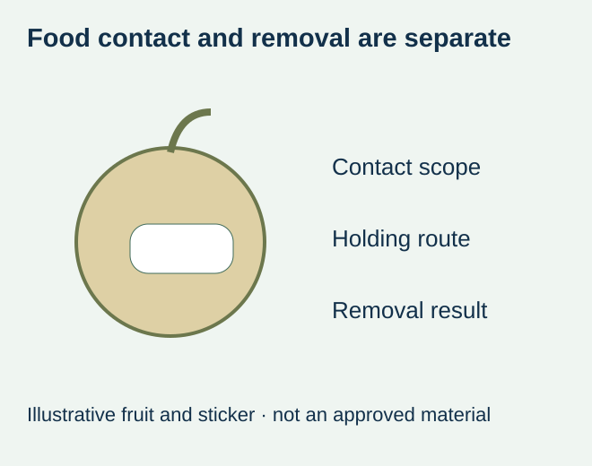
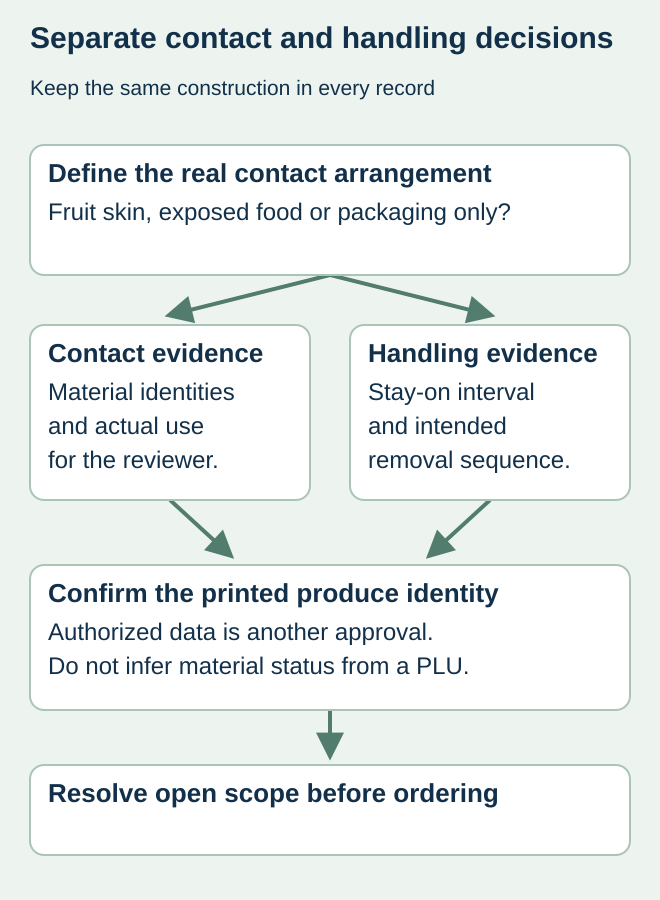

A produce buyer wants a small sticker that stays on during packing and peels off before eating. A successful peel on one fruit is useful handling evidence, but it does not establish whether the supplied label and adhesive are appropriate for direct food contact. Conversely, a component document does not prove that the finished sticker removes as intended.
Define the contact arrangement and the removal job as separate requirements for the same identified construction. A label on a punnet, a band touching produce and a sticker applied directly to the food are different briefs. Confirm the actual use before approving a material or copying a grade from another package.


Start at the surface the label actually touches
HERMA’s food-contact material overview distinguishes labels on packaging from labels placed directly on foods such as fruit. It identifies adhesive and label-material conformity as relevant. The listed manufacturer materials and references are product-specific information, not blanket approval of all printed labels or proof that this website supplies those grades.
Provide the responsible food-contact reviewer with the actual commodity, surface and use conditions. Identify whether any part touches exposed edible food and what contact is foreseeable. Do not decide that a peel, rind or consumer removal automatically eliminates the assessment question. The qualified reviewer should determine the applicable requirements for the product and market.
Match the offered finished sticker to the evidence
| Requirement | Record to identify | Independent question |
|---|---|---|
| Contact scope | Produce/packaging surface, time and conditions | Does the evidence represent the intended food contact? |
| Construction | Face, adhesive, ink/finish and actual references | Which components and conditions are covered? |
| Holding job | Packing, storage and handling before removal | Will the sticker remain useful through that route? |
| Removal job | Who removes it, when and how | What residue, tearing or surface observations matter? |
| Identification | Authorized PLU/retailer data and actual artwork | Does the printed information belong to this item? |


Keep a removal observation in its proper scope
For a hypothetical fruit-packing operation, a sticker might peel neatly from a dry demonstration fruit but behave differently after the actual cold-storage and handling route. Ask the supplier and quality owner what representative samples and observations are needed. Record the actual fruit and conditions; do not generalize one result to every commodity or surface.
Likewise, remaining attached does not mean the sticker is edible, compostable or suitable for an unintended contact arrangement. Do not present an adhesive claim as a food-safety or disposal claim. If such a statement is requested, obtain the separate product-specific evidence and approval before adding it to the artwork.
Protect the component-to-finished-label link
An adhesive reference alone may not describe the finished printed item. Keep the face, printing and any protective finish identified, and ask the responsible reviewer what documentation or further assessment is required. The construction-document guide supports that cross-reference; it does not certify a fruit sticker.
If the converter changes a material after the review, identify the replacement and reopen the affected evidence. The same fruit graphic and die size do not establish the same supplied construction. Keep the approved references with the purchasing and receiving record.
Approve identification and physical use separately
The produce-data guide addresses which identifier may be printed and who authorizes it. That decision does not authorize the contact material. The removal guide addresses the use sequence and aftermath, which also remain distinct from the contact assessment.
The release should identify the exact offered sticker, accepted contact scope, intended handling/removal and approved data, with unresolved items visible. Do not order an ordinary decorative label for direct fruit contact merely because a similar sticker looks familiar. Actual supply and supporting documentation require confirmation for the proposed use.
Discuss the unresolved label requirement
Identify the produce, destination market, direct or packaging-only contact, proposed complete construction and removal expectations. Ask whether a supply option and documentation can actually be confirmed for that use. Prepare a label specification inquiry. The contact page opens an email draft and lists email or WhatsApp for attachments. Supply, proof options, testing, pricing and timing require project confirmation. Review the food-label product scope.